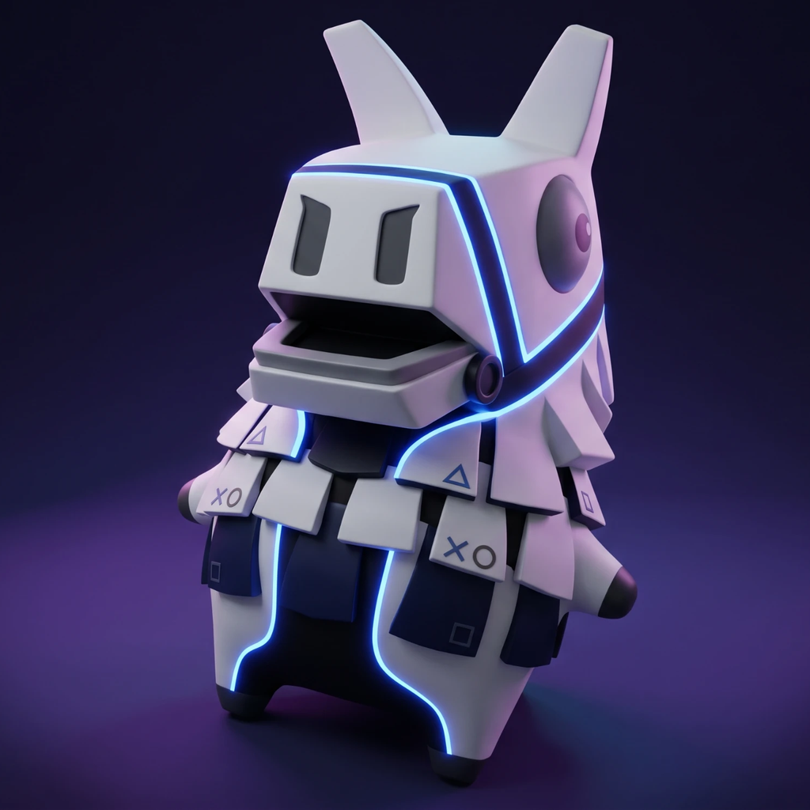
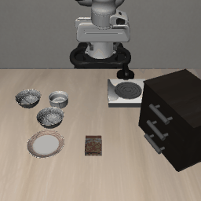
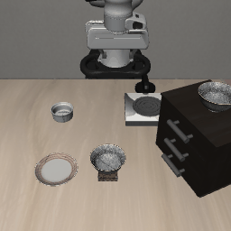
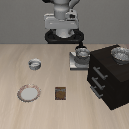
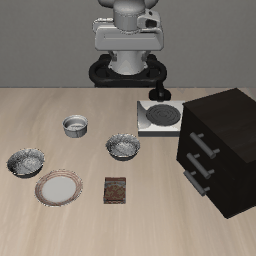
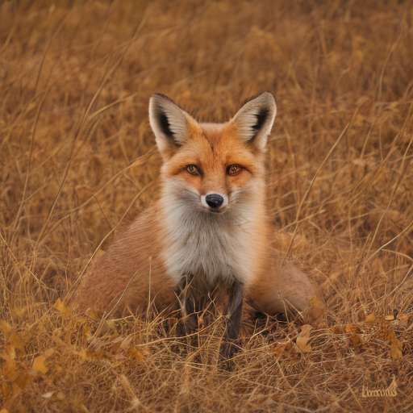
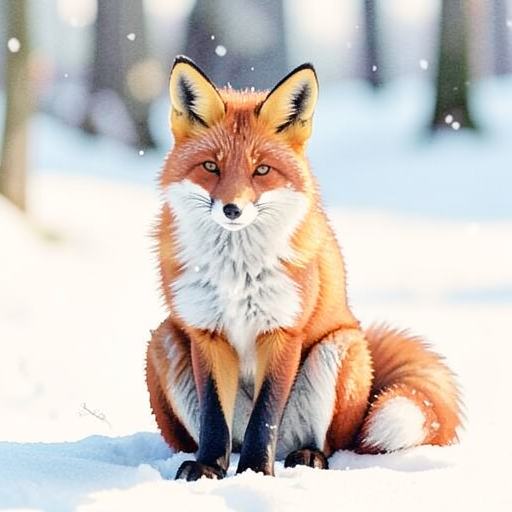

PSllama
Local AI inference on a jailbroken PlayStation 5, through Vulkan.
PSllama is a homebrew PS5 application that runs language, vision, speech, image, video and robot-policy models on the console's GPU and serves them over an OpenAI-style HTTP API. It is built from llama.cpp, stable-diffusion.cpp and whisper.cpp, all sharing one ggml Vulkan backend on the Mesa RADV driver from the PS5_Vulkan project.
Contents
- What works
- Requirements
- How to install
- Usage
- Results
- Media
- Findings
- Limitations and known issues
- Credits and license
What works
| Capability | Engine | Largest or typical model tested | Headline measurement |
|---|---|---|---|
| Text generation | llama.cpp | Qwen3-30B-A3B (IQ2_XXS, 10.4 GB) | 35 to 96 tok/s depending on the prompt |
| Image understanding | llama.cpp + mtmd | Gemma 3 12B, Qwen2.5-VL 7B | About 2.7 s per image before the answer starts |
| State-space models | llama.cpp | Falcon-H1 34B, Mamba-Codestral 7B, Mamba 1.4B | 17 to 480 tok/s |
| Speech to text | whisper.cpp | Whisper large-v3-turbo | 8 s of audio in 0.79 s |
| Text to speech | llama.cpp + mtmd | Qwen3-TTS 1.7B, with voice cloning | About 2× real time |
| Voice agent | all three | Whisper + Qwen3-4B + Qwen3-TTS | 2.3 to 2.7 s to first audio when warm |
| Image generation and editing | stable-diffusion.cpp | FLUX.2-klein 4B, Z-Image-Turbo | 17.6 s at 768×768 (FLUX.2-klein, 4 steps) |
| Video generation | stable-diffusion.cpp | HunyuanVideo 1.5 I2V, Wan 2.1 1.3B | 17 frames at 416×224 in 107 s |
| Robot policy | llama.cpp + custom vision encoder | OpenVLA 7B (LIBERO-Spatial) | 23 of 30 simulated tasks, 0.94 s per action |
Requirements
- Console: a jailbroken PS5 with a payload loader. Tested on CFI-1208B, firmware 13.60.
- Payloads on the console: an ELF loader (
elfldr), an FTP server (ftpsrv) andShadowMount+to register and mount the app folder.shsrv(shell) andklogsrv(kernel log) are needed for development. - Build host: Linux x86-64 with the PS5_Vulkan toolchain and its RADV build,
cmake,clangandglslc. - Storage: the application is about 115 MB. Models are 0.1 to 14 GB each.
- Network: the server only answers clients on a Tailscale network (100.64.0.0/10) and requires an API key.
Memory to plan around: the console has 16 GB shared between CPU and GPU. The app gets a 12 GiB Vulkan heap plus about 2.3 GB on the CPU side, so a model and its working memory must fit in roughly 12 GiB.
How to install
1. Prepare the build host
- Set up PS5_Vulkan and build its RADV driver (
tools/build-radv.sh). The driver ships as source, not as a prebuilt library. - Check out the three engines at the revisions PSllama was developed against:
Project Revision llama.cpp 552f18f91stable-diffusion.cpp f89d9b1whisper.cpp d1be6fd - Apply
patches/llama.cpp/psllama-vs-552f18f91.patchto llama.cpp and copyssm_scan_mamba1.compintoggml/src/ggml-vulkan/vulkan-shaders/. Together they cover the sampler fix, the memory-budget override and the Mamba-1 GPU scan.
2. Build
- Cross-build llama.cpp with the Vulkan backend for the PS5, with
-DGGML_MAX_NAME=160and the multimodal library enabled. stable-diffusion.cpp needs the longer tensor names, and all three engines must share this one ggml build. - Build stable-diffusion.cpp against that same ggml using
app/sd/CMakeLists.txt. - Build the application. The API key is given here and compiled in:
cd app
PSLLAMA_API_KEY="$(openssl rand -hex 32)" \
PS5_VULKAN_ROOT=/path/to/ps5-vulkan \
LLAMA_SOURCE=/path/to/llama.cpp \
LLAMA_BUILD=/path/to/llama.cpp/build-ps5 \
SD_SOURCE=/path/to/stable-diffusion.cpp \
SD_BUILD=/path/to/sd-build-ps5 \
WHISPER_SOURCE=/path/to/whisper.cpp \
OUT=$PWD/out/my-build \
bash ./build-gguf-vk-title.shThe result is out/my-build/eboot.bin plus an sce_module folder. The build takes about a minute once the libraries exist.
3. Install on the console
- Create the app folder, for example
/data/homebrew/PPSA99005/, and uploadeboot.binandsce_module/to it over FTP. - Add
sce_sys/param.json(title id and name) andsce_sys/icon0.png(512×512). The app will not register without an icon. - Reboot and re-jailbreak. ShadowMount+ registers app folders when it starts; registering a new title later in the same session failed for us.
- Create
vk-env.confin the app folder with these two settings:
GGML_VK_IGNORE_MEMORY_BUDGET=1
GGML_VK_SUBALLOCATION_BLOCK_SIZE=268435456The first works around memory counters that only ever grow on this driver. The second (256 MB blocks) avoids allocation failures after switching models.
4. Add models
Upload model files into the app folder over FTP. The console sees that folder as /app0.
| Kind | Layout in the app folder |
|---|---|
| Language model | <name>.gguf |
| Vision projector for a language model | <name>.mmproj.gguf, next to <name>.gguf |
| Image or video model | A folder with the model files and an sd-model.conf naming them (examples in app/sd/models/) |
| Speech to text | whisper/ggml-large-v3-turbo-q5_0.bin |
| Text to speech | qwen3-tts-1.7b/ with the model and its projector |
| OpenVLA | <name>.gguf (language model) and <name>/dinov2.gguf, siglip.gguf, proj.gguf |
5. Start and check
Launch the app from the home screen, then, from a machine on the same Tailscale network:
curl -H "Authorization: Bearer $PSLLAMA_API_KEY" http://$PS5_HOST:8081/healthIt reports which models are loaded. The first launch loads the default model, which takes about 100 seconds.
Usage
All endpoints need the Authorization: Bearer header. Chat follows the OpenAI format, so existing clients work by pointing them at the console.
| Endpoint | Purpose |
|---|---|
GET /health | What is loaded, and with which settings |
GET /v1/models | Language models in the app folder |
POST /v1/models/load | Load a language model; with "stream": true it reports progress |
POST /v1/chat/completions | Chat, streaming or not; accepts images as image_url parts when the model has a projector |
POST /v1/images/generations | Text to image; ref_images_b64 for editing, init_image_b64 for image to image |
POST /v1/videos/generations | Text or image to video; returns PNG frames |
POST /v1/audio/transcriptions | Speech to text from a WAV file |
POST /v1/audio/speech | Text to speech, optionally in a reference voice |
POST /v1/voice/chat | One spoken turn: speech in, streamed text and speech out |
POST /v1/vla/act | One OpenVLA control step: a 224×224 image and an instruction in, seven action values out |
# Chat
curl http://$PS5_HOST:8081/v1/chat/completions \
-H "Authorization: Bearer $PSLLAMA_API_KEY" -H "Content-Type: application/json" \
-d '{"messages": [{"role": "user", "content": "Hello"}], "max_tokens": 64}'
# Load a model with progress events
curl -N http://$PS5_HOST:8081/v1/models/load \
-H "Authorization: Bearer $PSLLAMA_API_KEY" -H "Content-Type: application/json" \
-d '{"model": "Qwen3-4B-Q4_K_M.gguf", "context_tokens": 4096, "stream": true}'
# Generate an image
curl http://$PS5_HOST:8081/v1/images/generations \
-H "Authorization: Bearer $PSLLAMA_API_KEY" -H "Content-Type: application/json" \
-d '{"model": "flux2-klein-4b", "prompt": "a red fox in fresh snow", "size": "768x768"}'Only one request runs at a time. Image and video models take the whole GPU, so the language model is unloaded for them and reloaded on the next chat request. Speech models and a language model under 5 GB stay loaded together.
Results
Measured on a base PS5 (CFI-1208B). Language-model rates are greedy decoding at a 4,096-token context unless stated.
Language models
| Model | File | Size | Generation | Notes |
|---|---|---|---|---|
| Qwen3-4B | Q4_K_M | 2.5 GB | about 70 tok/s | Used by the voice agent |
| Qwen2.5-VL 7B | Q4_K_M | 4.7 GB | 62 tok/s | Needs a q8_0 or f16 KV cache (see Findings) |
| Gemma 3 12B | Q4_K_M | 7.3 GB | 36 to 39 tok/s | Largest context that fit: 30,720 tokens |
| Gemma 3 27B | UD-IQ2_XXS | 7.9 GB | 20.8 tok/s | |
| Qwen3-30B-A3B (mixture of experts) | UD-IQ2_XXS | 10.4 GB | 35 to 96 tok/s | Varies with the prompt; largest context that fit: 28,672 tokens |
A working rule for Q4_K files on this GPU: time per token is about 3.3 ms plus the file size divided by 386 GB/s. The heavily compressed IQ2 formats run at roughly half that memory rate.
State-space models
| Model | Type | Size | GPU, writing | CPU, writing | GPU, reading a 3,300-token prompt |
|---|---|---|---|---|---|
| Mamba 130M | Mamba-1 | 0.09 GB | 480 tok/s | 137 tok/s | 8,920 tok/s |
| Mamba 1.4B Instruct | Mamba-1 | 0.82 GB | 160 tok/s | 24 tok/s | 1,657 tok/s |
| mamba2-130m | Mamba-2 | 0.18 GB | 480 tok/s | 137 tok/s | 11,394 tok/s |
| Granite 4.0 H 350M | Mamba-2 hybrid | 0.22 GB | 180 to 214 tok/s | 39 to 44 tok/s | 5,106 tok/s |
| Falcon-H1 0.5B Instruct | Mamba-2 hybrid | 0.31 GB | 183 to 192 tok/s | 34 to 63 tok/s | 2,566 tok/s |
| Mamba-Codestral 7B | Mamba-2 | 4.15 GB | 54 to 56 tok/s | 5.4 tok/s | 326 tok/s |
| Falcon-H1 34B Instruct (IQ2_XXS) | Mamba-2 hybrid | 9.49 GB | 16 to 17 tok/s | 1.2 tok/s | 94 tok/s |
Mamba-2 models ran on the GPU without changes. Mamba-1 needed a new GPU shader; before it, Mamba 1.4B wrote 26 tok/s. Writing speed does not fall as the prompt grows, because these models keep a fixed-size state (14 MiB for Mamba 1.4B) where a transformer keeps a cache that grows with every token.
Robot policy: OpenVLA on LIBERO-Spatial
OpenVLA (LIBERO-Spatial fine-tune, Llama-2 7B at Q4_K_M) runs on the console; the LIBERO simulator runs on a separate Linux machine and sends one camera frame per control step.
| Measure | Result |
|---|---|
| Episodes completed | 23 of 30 (77%), 10 tasks × 3 tries |
| Published result for this checkpoint | 84.7% over 500 episodes at full precision |
| Time per control step on the console | 0.94 s (image encoder 0.16 s, prompt 0.68 s, action tokens 0.10 s) |
| Steps per successful episode | 112 on average, about 2 minutes |
With 30 episodes the uncertainty is roughly ±15 points, so this is consistent with the published figure but does not establish that 4-bit weights cost nothing. Per-task results: tasks 0, 1, 3 and 7 succeeded 3 of 3; tasks 2, 5, 6, 8 and 9 succeeded 2 of 3; task 4 (bowl in a drawer) 1 of 3.
Images
| Model | Settings | Time once loaded |
|---|---|---|
| SD-Turbo | 512×512, 1 step | 0.9 s |
| FLUX.2-klein 4B (Q8_0) | 768×768, 4 steps | 17.6 s |
| FLUX.2-klein 4B, editing from a reference image | 512×512, 4 steps | 13.8 s |
| Z-Image-Turbo (Q8_0) | 512 / 768 / 1024 square, 8 steps | 18 / 42 / 80 s |
| ERNIE-Image-Turbo (Q6_K) | 768×768, 8 steps | 66 s |
Video
| Model | Output | Time |
|---|---|---|
| Wan 2.1 T2V 1.3B | 9 frames, 416×240, 20 steps | about 60 s |
| HunyuanVideo 1.5 I2V 480p (Q4_K_M) | 17 frames, 416×224, 20 steps | 107 s |
| HunyuanVideo 1.5 I2V 480p | 33 frames, 832×480 | 2,136 s (36 minutes) |
HunyuanVideo's files total 13.6 GB, more than the heap. It runs by keeping the text encoder, vision encoder and VAE on disk and loading each only while it is needed.
Speech
| Task | Result |
|---|---|
| Whisper large-v3-turbo | 8 s of audio transcribed in 0.79 s |
| Qwen3-TTS 1.7B | About 2× real time (7.0 s of speech in 3.5 s), with or without a reference voice |
| Voice agent, warm | 2.3 to 2.7 s from end of speech to first audio |
| Voice agent, after image or video work | About 50 s for the first turn while three models reload |
Media
Everything shown here was produced on the console. Files are under media/, video/ and audio/.
OpenVLA driving a simulated arm (LIBERO-Spatial)




Image generation

Image editing (FLUX.2-klein)

Video
Speech
Findings
Things learned about this hardware and driver that shaped the code. The working log with dates, commands and dead ends is FINDINGS.md.
Memory
- The driver's memory-budget counters only grow. After a few model swaps they report zero free memory and loads fail although the heap is empty.
GGML_VK_IGNORE_MEMORY_BUDGET=1(a small patch) makes the backend ignore them. - Each Vulkan allocation must be one contiguous range. The default 1 GiB blocks stop fitting after models of different sizes have come and gone. 256 MB blocks fixed it with no measurable speed change.
- Reading GPU memory from the CPU is very slow. For the memory types the GPU uses, the CPU writes at about 26 GB/s but reads at about 49 MB/s. Anything that copies results back to the CPU each token has to be kept small.
- A vision projector can ask for far more than it needs. Qwen2.5-VL's projector sizes its buffers for a 1288×1288 image at load time; beside a 7B model and two speech models that allocation failed and the app crashed. The server now frees the speech models first and caps images at 1,024 tokens.
Speed
- Text generation is limited by memory bandwidth, which is why time per token tracks file size so closely.
- Image generation is limited by compute. Z-Image-Turbo took the same time at Q8_0 and at Q4_K.
- Low-temperature sampling was twice as slow as it should be. The console's math library takes about 75 ns for
expfwhen the result underflows, and a sampler calls it for every token in the vocabulary. Skipping the call below −104 fixed it. - One long GPU submission is killed after about 10 seconds. Prompt evaluation is split into small batches, and large image decodes are tiled, to stay under that.
Model-specific
- A 4-bit KV cache breaks Qwen2.5-VL. With
q4_0it produces garbage or stops after a few tokens, even on text-only prompts;q8_0andf16are correct. Other models tested are fine atq4_0. The cause was not investigated. - Mamba-1 ran at CPU speed until it got its own shader. The backend's state-space scan only handled Mamba-2, so every Mamba-1 layer bounced to the CPU (98 graph splits). A scan shader for Mamba-1 brought that to 2 splits and 160 tok/s at 1.4B.
- A long instruction prompt makes a vision model describe what it expects. Asked to describe a scene and choose an action in one prompt, Gemma 3 reported what the task wanted, not what the image showed. Separate "describe" and "decide" calls fixed the descriptions.
- A general vision model is a weak robot controller. With scripted arm motions and Gemma 3 or Qwen2.5-VL choosing the steps, 5 of 12 tasks completed (2 of 12 without the image). Both models picked the right object first and then failed to sequence or stop. OpenVLA, trained for the job, completed 23 of 30 on harder tasks.
Console and tooling
- The app can become unlaunchable until a reboot. The launcher then answers
0x80940033("Can't start the game or app"). It happened once after a crash and once after editing the app's registered name and icon. ShadowMount's log shows why nothing can be registered in that state:AppInstallTitleDir bridge unavailable. - To rename the app, change
param.jsonandicon0.pngin the source folder only, uninstall it in ShadowMount (never "Delete source"), and reboot. - The console's FTP server is unreliable for existence checks.
SIZEanswers for files that are not there, andNLSTandMDTMare missing. UseLIST. It also decrypts executables on download, so a re-downloadedeboot.binmust be compared with the unsigned ELF. - Only one process can read the kernel log. Two readers split the stream between them, so development uses a single recorder that writes to files.
Limitations and known issues
- One request at a time, and one large model at a time.
- The API key is fixed at build time; changing it means rebuilding.
- No raw text-completion endpoint, so models without the ChatML prompt format cannot be prompted properly yet.
- Switching from image or video work back to voice costs about 50 seconds.
- A crash in the app can require rebooting and re-jailbreaking the console.
- Video output is PNG frames; encoding into a clip is left to the client.
- OpenVLA was evaluated on one suite with 30 episodes. Other suites, a wrist camera and action chunking are untested.
- RWKV and Jamba have not been run.
Credits and license
- PS5_Vulkan for the Vulkan driver port and build tooling that this depends on.
- llama.cpp, stable-diffusion.cpp and whisper.cpp for the inference engines.
- OpenVLA and LIBERO for the robot policy and benchmark.
- The PS5 homebrew community for the loader, FTP, shell, log and ShadowMount payloads.
PSllama's own source files are GPL-3.0-or-later. Models keep their own licenses. "PlayStation" and "PS5" are trademarks of Sony Interactive Entertainment; this project has no connection to Sony.